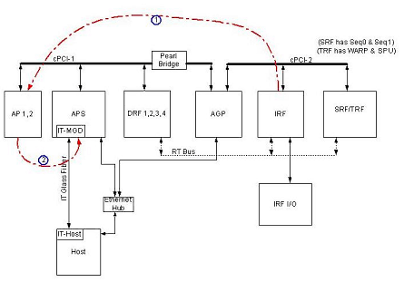

- 00000018WIA3090AF20GYZ
- id_131073373.0
- Aug 29, 2019 1:33:24 AM
IRF -> APS DP
Diagnostic Link
Diagnostics >> MGD Chassis >> MGD Data Paths
Purpose
This test verifies the DAB (Data Acquisition Board) packets transmitting from the IRF DAB FIFO (a First In First Out buffer that contains the DAB packet on the IRF) to the AP's DAB packet buffer. The data transfer is realized by using a DMA (Direct Memory Access) controller on the IRF.
Components Tested
The APS is the master of the test. It sets up a data transfer by passing the destination address and data size of a DAB packet to the DMA controller (the source address is defaulted to the IRF DAB FIFO), writes a sequence of commands and data to the DAB FIFO, initialize the data packet and initiate a transfer. While the data is being transferred, it monitors the IRF's DAB FIFO status register for status. Once it reads a transfer complete status, the transmitted DAB packet is compared to data originally written into the IRF DAB FIFO to check for any errors.
-
AP board
-
APS board
-
IRF board
Requirements
Configuration
This diagnostic is available from the Common Service Desktop when required system components are available.
Minimum Configuration:
-
AP board
-
APS board
-
IRF board
Tools and Test Equipment
No additional equipment is required.
Block Diagram

Test Sequence
There are 4 data patterns to be tested in this test: walking ones, walking zeros, counting up and counting down. Each of the data pattern is transferred and checked for 256 DAB packet locations in the AP DAB buffer, thus, a total of a 1024 DMA transfers are performed.
Expected Results
Output values are judged pass or fail. In the event of failure, the details of the failure can be found in the GE System Log.
Although, in the case of errors you can click the 1st Error number to see the nature of the error, it is recommended that you view the GE System Log to view all the errors that were recorded.
Etcetera
Click Calculate Time to get an estimate of the time it will take to run the selected diagnostics.
Other than Test Iterations, the Test Options settings should not be changed from their default settings unless instructed to do so by a GE Healthcare engineer. There are very few circumstances when these settings ever need to be changed.
Finalization
TPS reset is required prior to scanning.
Links
IRF Help Page:/csd/mr_csd/serviceDesktop/docs/cclass/irf_board/irf_board.htm
APS Board Help Page:/csd/mr_csd/serviceDesktop/docs/cclass/aps_board/aps_board.htm
AP Board Help Page - Reflex 200 & 400:/csd/mr_csd/serviceDesktop/docs/cclass/ap_boards/ap_boards.htm
AP Board Help Page - Reflex 200B & 400B:/csd/mr_csd/serviceDesktop/docs/cclass/ap_boards/ap_boards2.htm